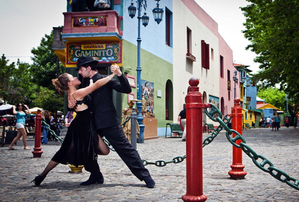
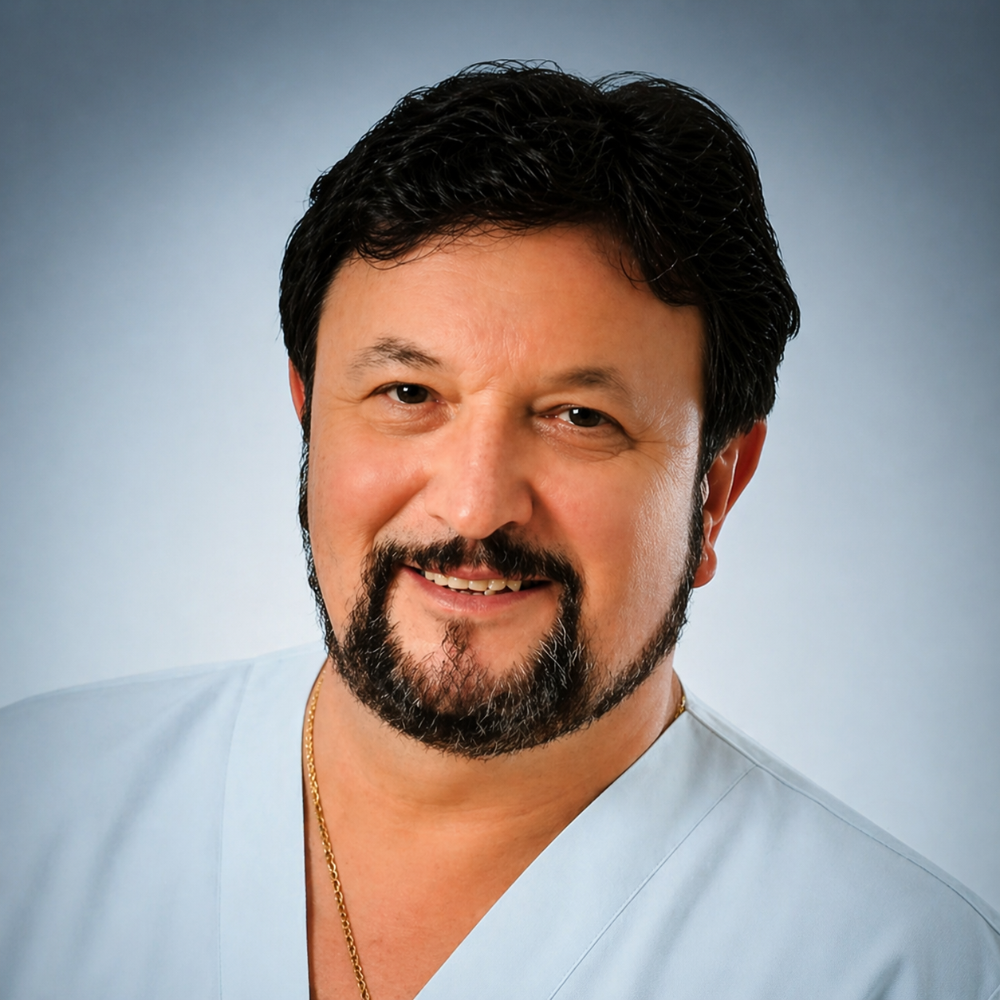
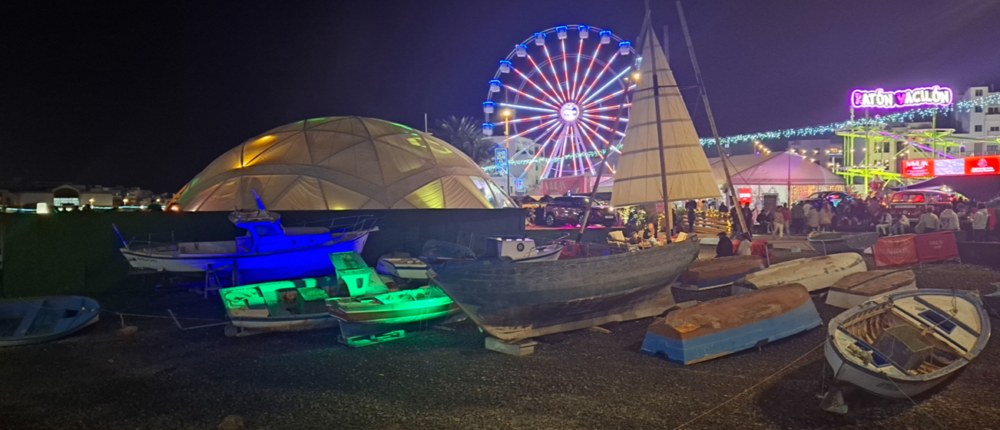
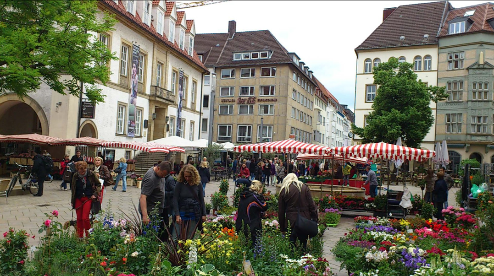
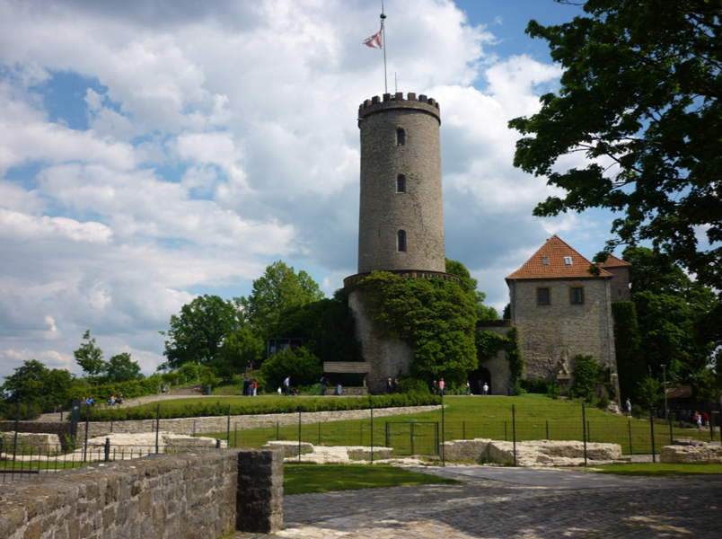

Victor A. Koldobsky
Diplomder EU
01 · Über mich
Seit 35 Jahren im Dienste des Körpers.
KiroShiatsu® ist eine eigens entwickelte manuelle Methode zur gezielten Schmerzlinderung und Behandlung muskulärer Blockaden. Sie basiert auf präzisen Grifftechniken aus der therapeutischen Körperarbeit.
Anders als bei herkömmlichen Massagen arbeite ich nicht oberflächlich — ich suche die Ursache der Beschwerden und behandle sie gezielt. Jede Anwendung wird individuell angepasst, je nach Beschwerde, Organismus und Situation. Meine Arbeit basiert nicht auf Standardtechniken, sondern auf Erfahrung, Präzision und Körperkenntnis.
- 35+ Jahre Erfahrung in therapeutischer Körperarbeit
- ® KiroShiatsu — eingetragene eigene Methode
- ∞ Individuelle Behandlung — kein Standardprotokoll
Victor A. Koldobsky
Diplomder EU
Mein Weg
Drei Welten — eine Berufung.


